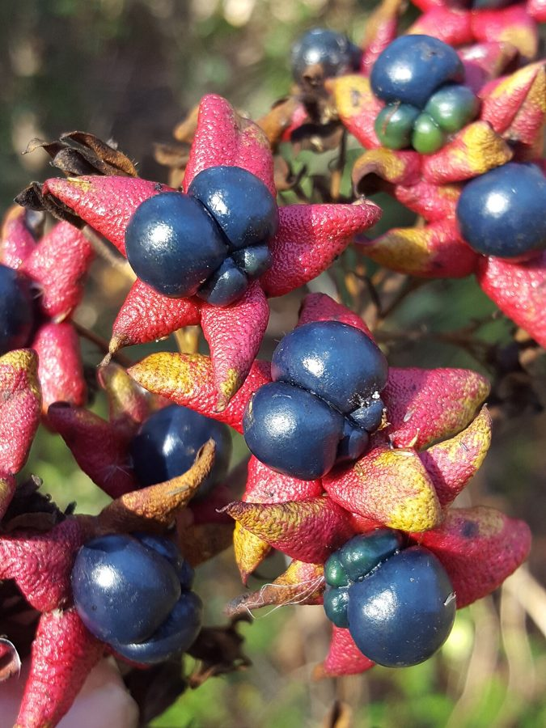

ट्यूब फ्लावरTube Flower
Clerodendrum indicum · Lamiaceae · FLR-0413

- Scientific name वैज्ञानिक नाम
- Clerodendrum indicum (L.) Kuntze
- Family कुल
- Lamiaceae
- Hindi हिंदी
- ट्यूब फ्लावर
- Local names स्थानीय नाम
- tube flower, bharangi
- Status here यहाँ की स्थिति
- native
- Movement आवागमन
- Resident, here all year
- Known from कहाँ दर्ज
- Others have published records from the wider Awadh–Purvanchal plain, none yet from Basti–Ayodhya अवध–पूर्वांचल से दूसरों के प्रकाशित अभिलेख, बस्ती–अयोध्या से अभी नहीं
- IUCN IUCN
- LC
- Review समीक्षा
- not yet reviewed
When to look कब देखें
Expected mainly in January, February, August, September, October, November, December. मुख्यतः जनवरी, फ़रवरी, अगस्त, सितंबर, अक्टूबर, नवंबर, दिसंबर में अपेक्षित।
Uses and possibilities उपयोग और संभावनाएँ
“Traditional medicine” means a documented traditional use, not a claim that it works. Nothing on this page is medical advice.
Drawn from the documented uses in the profile below, where each is labelled traditional, current or a research lead. All uses →
Tell it apart from इनसे अलग पहचानें
ट्यूब फ्लावर / Tube Flower
Clerodendrum indicum (L.) Kuntze — Lamiaceae
ट्यूब फ्लावर — जिसे भारंगी या बामनहट्टी भी कहा जाता है, यह नम नालों, बागों और नमी वाली खाली जमीन पर उगने वाला एक सीधा, लंबा और विरली शाखाओं वाला झाड़ीदार पौधा है। इसके तने खोखले होते हैं और पत्तियाँ तीन या चार के छल्लों में लगी होती हैं। इसके सफेद फूल बहुत लंबी पतली नलिका जैसे होते हैं और फल पकने पर नीले-काले हो जाते हैं, जो लाल रंग के बाह्यदल में जड़े दिखते हैं।
Quick Identification त्वरित पहचान
| Feature | Description |
|---|---|
| Plant habit | Tall, erect, little-branched perennial shrub with hollow cylindrical stems |
| Stems | Fluted, hollow, glabrous, green or purplish, herbaceous above |
| Leaves | Subsessile, in whorls of three to five (or opposite); narrowly lanceolate, entire |
| Inflorescence | Large, terminal, cylindrical thyrsoid panicles of long-tubed flowers |
| Flowers | Cream-white or ivory, with extremely long, slender, curved corolla tubes |
| Stamens | Long-exserted, curved, purplish filaments projecting far beyond the corolla |
| Fruit | Fleshy, bluish-black drupe nestled within the enlarged, bright red fleshy calyx |
Field tip: Look for tall erect hollow stems with leaves arranged in whorls and dramatic white flowers possessing exceptionally long, slender tubes.
हिंदी: खोखले तने, छल्लों में लगी लंबी पत्तियाँ और बहुत लंबी नली जैसे सफेद फूल इसकी अनोखी पहचान हैं।
Morphology आकारिकी
Measurement not available in consulted sources.
A tall, sparsely branched or wand-like perennial shrub with erect stems. Rootstock woody and perennial. Stems erect, cylindrical, fluted, hollow, smooth, herbaceous above, woody towards the base, pale green or purplish-tinged, glabrous throughout.
Leaves arranged in whorls of three to five, or rarely opposite, subsessile; blade narrowly lanceolate or oblong-lanceolate, acute or acuminate at the apex, tapering towards the base, margins entire or faintly sinuate, membranous, bright green above, paler beneath, glabrous on both surfaces.
Inflorescence consisting of a large, erect, terminal, elongated thyrsoid panicle, composed of opposite or whorled cymes on long peduncles. Calyx campanulate, deeply five-lobed, segments ovate-lanceolate, acute, green during flowering, greatly enlarging and turning thick, fleshy, and bright red or purplish in fruit.
Corolla white, cream-coloured or ivory; tube remarkably long, slender, cylindrical, curved downwards; limb five-lobed, lobes obovate, spreading or reflexed. Stamens four, didynamous, inserted near the top of the tube; filaments very long, slender, curved, purplish, projecting far beyond the corolla lobes.
Fruit a globose, fleshy, succulent drupe, deeply four-lobed, ripening to a lustrous bluish-black or dark purple colour, seated within the accrescent, spreading, star-like, fleshy red calyx.
हिंदी: पौधा सीधा और लंबा होता है। तना भीतर से खोखला होता है। पत्तियाँ लंबी होती हैं। फूल बहुत लंबी नली वाले सफेद होते हैं। पकने पर फल नीला-काला होता है और लाल कटोरी में रखा दिखता है।
Behaviour & Ecology व्यवहार और पारिस्थितिकी
A native perennial shrub adapted to moist alluvial soils, damp drainage ditches, low-lying grove borders, and river terraces across the Gangetic plains. It thrives in high humidity and semi-shaded conditions, often forming loose colonies along wet channels.
The remarkably elongated corolla tube is a classical adaptation for sphingophilous pollination: the flowers open late in the afternoon and emit a delicate scent that attracts long-tongued hawk moths (Sphingidae). When mature, the contrasting dark bluish-black drupe nestled in the bright red, fleshy calyx presents an eye-catching visual signal (ornithochory) that encourages fruit consumption and seed dispersal by frugivorous bulbuls and mynas.
हिंदी: यह पौधा नमी और नालों के किनारे पनपता है। इसके लंबे फूलों का रस रात में उड़ने वाले पतंगे पीते हैं और लाल-काले फलों को चिड़ियाँ खाकर बीज फैलाती हैं।
Life Cycle / Phenology जीवन चक्र
New vegetative shoots sprout from the perennial rootstock with the onset of monsoon rains in July and August. Stem growth is rapid, reaching full height by late August.
Flowering begins in August and continues through November and December. Striking white long-tubed flowers open in successive whorls along the central axis. Fruits ripen from November through February, with the persistent red calyx and glossy black berries remaining conspicuous throughout the winter months. In late spring, above-ground herbaceous stems dry back, while the underground rootstock survives dormant.
हिंदी: बरसात में नई डालियां फूटती हैं। अगस्त से दिसंबर तक फूल खिलते हैं। सर्दियों में फल पककर काले हो जाते हैं और बसंत में तना सूखने लगता है।
Associated Species / Interactions सहजीवी प्रजातियाँ
Pollinated primarily by night-flying hawk moths and large skipper butterflies capable of reaching deep into the elongated corolla tube. The fleshy ripe drupes are consumed and dispersed by red-vented bulbuls and Asian koels.
Often grows in damp shaded ground alongside related understorey plants such as bhant (Clerodendrum infortunatum), adusa, and gumma.
हिंदी: इसके फूलों का रस रात के पतंगे पीते हैं। इसके पके फलों को बुलबुल और कोयल खाती हैं। यह अक्सर भांट के साथ उगता है।
Pests and Diseases कीट और रोग
Foliage is chewed by various chrysomelid flea beetles and grasshoppers. Powdery mildew can affect mature leaves during cool humid winter spells.
हिंदी: सर्दियों में पत्तियों पर कभी-कभी फफूंद के धब्बे पड़ जाते हैं और छोटे कीड़े पत्तियों को कुतरते हैं।
Agricultural / Human Relevance कृषि प्रासंगिकता
Chopra et al. (1956, p. 71) record that the root of Clerodendrum indicum (vern. Bharangi) is used in asthma, cough, and scrofulous affections, and the leaf juice is applied to herpetic eruptions. This is a record of published traditional use, not medical advice.
हिंदी: आयुर्वेद में इसे भारंगी कहा जाता है और इसकी जड़ों का उपयोग सांस और खांसी की पारंपरिक दवाओं में होता रहा है।
Expected Locally स्थानीय रूप से अपेक्षित
Not a field record. Written from published accounts for eastern Uttar Pradesh. No confirmed local sighting yet — if you have seen it, that is what the atlas needs.
अभी तक स्थानीय पुष्टि नहीं। यह विवरण प्रकाशित स्रोतों से है, किसी अवलोकन से नहीं।
Expected in damp drainage ditches, moist shaded grove margins, canal bunds, and riverine scrub across Basti, Ayodhya, and neighbouring districts from August through February. GBIF holds published records from the wider Awadh–Purvanchal plain, none yet from Basti–Ayodhya. The first verifiable record from the region will be a dated photograph of flowering plants or a population in a weed habitat or field border with district and coordinates.
हिंदी: बस्ती और अयोध्या में नहरों की पटरियों, गीले नालों और नम बागों के किनारों पर इसके मिलने की संभावना है।
Distribution वितरण
Global range: Native across South and Southeast Asia, from India and Nepal through Bangladesh, Myanmar, Thailand, and Malaysia.
In India: Widespread across the Sub-Himalayan tract, the Gangetic plain, Bengal, Assam, and peninsular India.
In Uttar Pradesh: Distributed along moist riverine lowlands and woodland margins across the northern and eastern districts.
In Basti district / eastern UP: Expected in moist alluvial depressions, grove understoreys, and along secondary irrigation canals.
हिंदी: यह पौधा भारत, नेपाल और दक्षिण-पूर्व एशिया के नम मैदानी और जंगली इलाकों में प्राकृतिक रूप से उगता है।
Research Questions शोध प्रश्न
- Which sphingid moth species are the primary nocturnal visitors to the elongated corolla tubes in eastern UP?
- What is the germination percentage of seeds recovered from bulbul droppings compared to uningested fruits?
- How does the accrescent red calyx contribute to photosynthetic support of the developing drupe? / फल के चारों ओर का लाल बाह्यदल उसके विकास में क्या भूमिका निभाता है?
- What is the spatial distribution of this shrub relative to soil water table depth in village grove systems? / गाँव के बागों में जमीन के जलस्तर के अनुसार इस पौधे का फैलाव कैसा रहता है?
- Can a child observe the long protruding purple stamens and the striking contrast between the black fruit and red calyx?
हिंदी: क्या रात के पतंगे ही इसके फूलों से रस निकाल पाते हैं और क्या चिड़ियाँ इसके बीजों को दूर फैलाती हैं?
Similar Species मिलती-जुलती प्रजातियाँ
| Species | How to tell apart | हिंदी | |
|---|---|---|---|
| `[[bhant\ | Clerodendrum infortunatum]]` | Bushy shrub with large, opposite, ovate-cordate leaves; flowers pinkish-white in terminal pyramidal panicles | पत्तियाँ बड़ी और चौड़ी होती हैं और फूल गुलाबी-सफेद पिरामिड जैसे गुच्छे में होते हैं |
| `[[adusa\ | Justicia adhatoda]]` | Large shrub with opposite lanceolate leaves, dense spikes of white two-lipped flowers with purple veins | फूल दो-होंठ वाले और घनी बालियों में होते हैं, नली बहुत लंबी नहीं होती |
Field rule: Look for the tall hollow stems, leaves in whorls of three to five, and exceptionally long slender corolla tubes with protruding purple stamens.
हिंदी: खोखले तने, छल्लों में लगी पत्तियाँ और बहुत लंबी नली वाले सफेद फूल इसे भांट से अलग करते हैं।
Taxonomy & Classification वर्गीकरण
Original description. First described as Siphonanthus indicus by Carl Linnaeus in 1753 in Species Plantarum, volume 1, page 109. Transferred to Clerodendrum by Otto Kuntze in 1891 in Revisio Generum Plantarum, volume 2, page 586.
Subspecies. Often treated in older Indian works under the synonym Siphonanthus indicus R.Br. (Duthie 1911; Hooker 1885). Monotypic in our region.
Family and order placement. Placed in family Lamiaceae (subfamily Teucrioideae), order Lamiales. Formerly included in Verbenaceae before molecular circumscription of Lamiaceae.
Phylogenetic notes. Characterized by long corolla tubes and accrescent red fruiting calyces, placing it in subgenus Siphonanthus.
IUCN status rationale. Assessed as Least Concern (LC) on the IUCN Red List due to its extensive geographical distribution and lack of widespread threats.
हिंदी: यह लैमिएसी (तुलसी कुल) का पौधा है। लिनियस के 1753 के नाम को कुंट्ज़े ने 1891 में क्लेरोडेंड्रम में रखा था। आईयूसीएन ने इसे संकटमुक्त माना है।
Photo Gallery फोटो गैलरी
No photos yet — add field photos to media/species/tube_flower/ and run node scripts/sync_photos.js.
Photos needed आवश्यक फोटो
- [ ] Tall hollow stem with whorled lanceolate leaves (छल्लों में लगी पत्तियों वाला तना)
- [ ] Panicle of long-tubed cream flowers and curved stamens (लंबी नली वाले सफेद फूल)
- [ ] Black drupe nestled in enlarged fleshy red calyx (लाल कटोरी में बैठा काला फल)
References संदर्भ
- Linnaeus, C. (1753). Species Plantarum, vol. 1, p. 109.
- Duthie, J. F. (1911). Flora of the Upper Gangetic Plain and of the Adjacent Siwalik and Sub-Himalayan Tracts, vol. 2, p. 226. (as Siphonanthus indicus)
- Hooker, J. D. (1885). The Flora of British India, vol. 4, p. 595. (as Siphonanthus indicus)
- Chopra, R. N., Nayar, S. L. & Chopra, I. C. (1956). Glossary of Indian Medicinal Plants, Council of Scientific and Industrial Research, New Delhi, p. 71.
- IUCN (2024). Clerodendrum indicum: de Kok, R. The IUCN Red List of Threatened Species, 2024. doi:10.2305/iucn.uk.2024-2.rlts.t150213451a250195021.en.
- GBIF Occurrence Data — Clerodendrum indicum, India (2025).
Source file: species/flora/shrubs/tube_flower.md